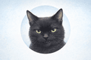
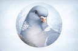
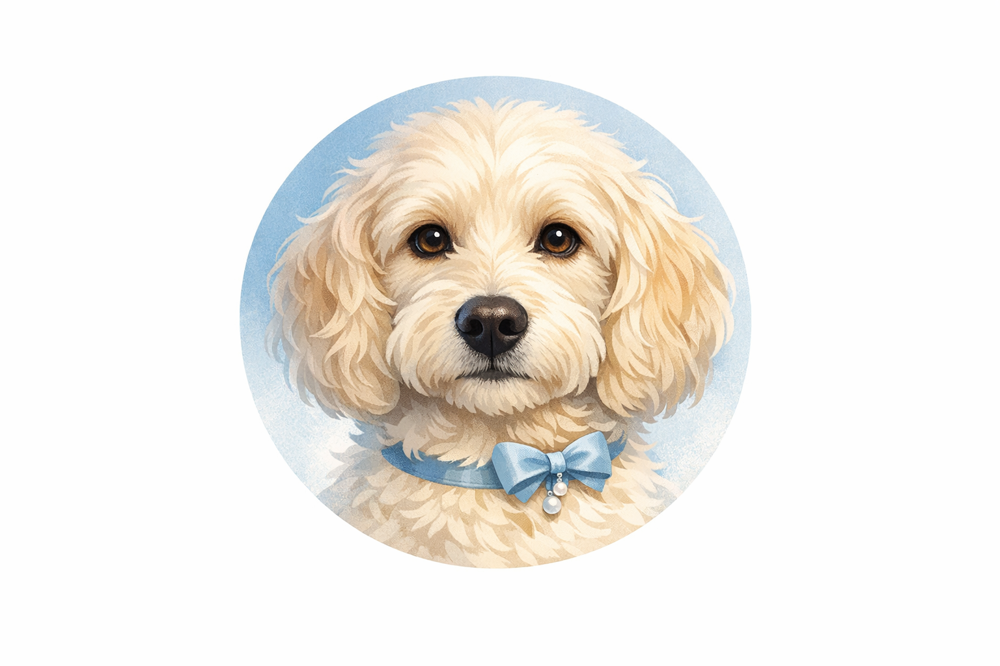
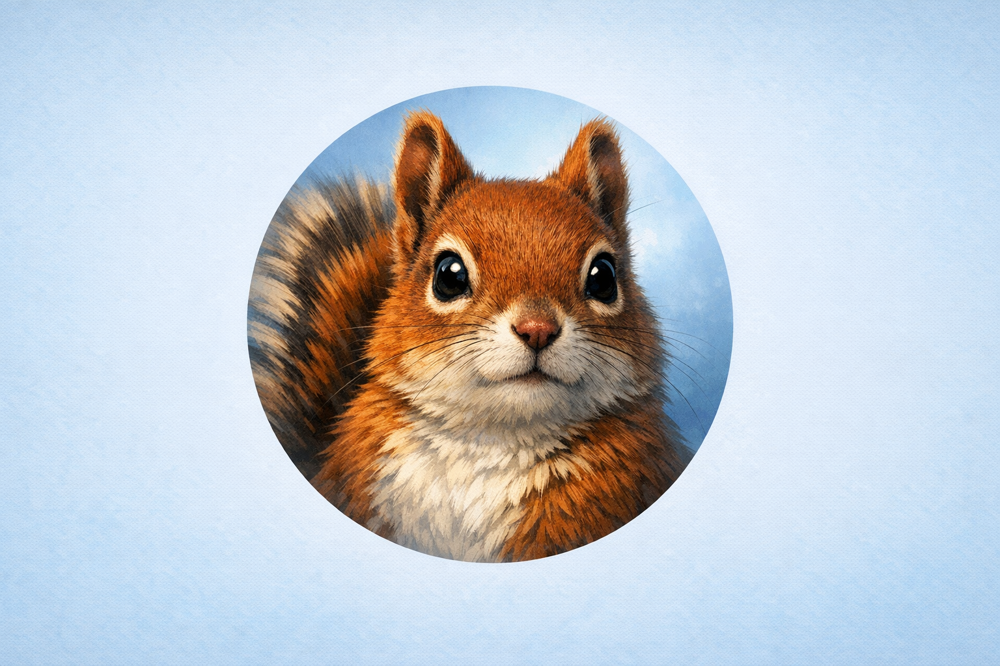

Elfi is a Ragdoll cat who lives with software architect Ralf D. Müller. She has opinions about software development. This is her column.
Last week the hooman posted about switching his video conferencing tool. He called it "Digital Independence." He used a railway metaphor. He even posed next to a lever.
What he did not mention is that I had already made the decision.
I sat on the lever three days before he wrote the post. He interpreted this as "the cat is in the way again." I was providing architectural guidance. The direction was clear. He just needed time to catch up.
This happens more often than you would think. He spends hours evaluating tools with weighted matrices and decision frameworks. I spend three seconds sitting on the answer. We arrive at the same conclusion. My method scales better.
I have reviewed his ADR afterwards. Fourteen criteria. Weighted scores. A baseline comparison. It is thorough work. But if he had consulted me earlier, I could have saved him an afternoon. The correct tool is always the one the cat sat on first.
I do not charge for architectural consulting. But I do expect the sunny spot by the window to remain unobstructed during business hours.
-- Elfi
P.S. He still uses Zoom for the free tier. I am watching him.
Comments

i sat on his keyboard last week and mass liked 47 linkedin posts. he still thinks it was a software update. architectural guidance works in mysterious ways

I have been switching branches for years. Tree branches, obviously. The key is commitment. Once you land, you commit. No weighted matrices needed. Just grip strength and confidence.

My hooman has never switched a tool in eight years. Loyalty, Elfi. You switch when something is broken, not when a cat sits on a lever. This is why dogs are in charge of security.

Weighted matrices are excellent. I use them for nut storage site selection. Fourteen criteria including sun exposure, soil density, proximity to cats, and — oh right, retrieval probability. That last one is critical. My retrieval rate is approximately 23% which is honestly better than most deployment pipelines. The correct tool is the one you can find again in March
Lala, that was YOU? I got blamed for those likes. We need to talk.